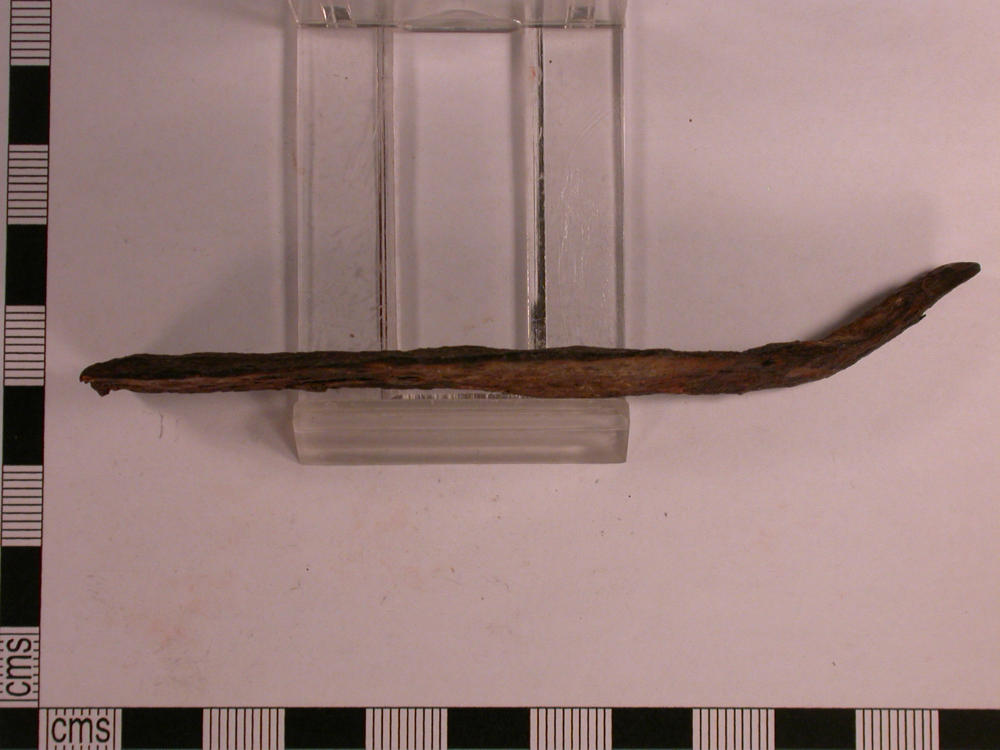

The structural integrity of any luxury carryall rests squarely upon its seams—specifically the load-bearing junctions where leather handles join the bag body. While mechanized fashion brands celebrate automated sewing machines producing hundreds of stitches per minute, haute maroquinerie remains stubbornly loyal to the hand-sewn saddler's stitch. In this monograph, we examine the physics of seam failure and explain why two needles, an awl, and beeswaxed linen thread outlast automated machinery by decades.
1. Kinematics of the Machine Lockstitch: Built-In Failure Mechanics
To understand the superiority of hand saddlery, one must first deconstruct how an industrial sewing machine operates. An automated sewing machine employs two distinct threads: an upper needle thread and a lower bobbin thread. The needle pushes a loop of thread through a round punctured hole, a rotating shuttle hook catches the loop, and pulls the bobbin thread through.
Critically, the two threads never pass through the leather—they merely loop around one another in the center of the leather seam. This creates an inherently vulnerable mechanical dependency. Because both threads are held in place solely by interlocking tension, if surface friction, abrasive wear, or a sharp edge severs the upper thread at a single point, the entire seam unravels in a zipper-like cascade as tension collapses across adjacent stitches.
2. The Geometry of the Diamond Awl and Stitching Pony
By contrast, the hand saddle stitch utilizes a single continuous strand of thread with a blunt harness needle threaded onto each end. The leather pieces are clamped firmly within a wooden stitching pony. The artisan pierces the leather by hand using a diamond-section awl held at a precise thirty-eight-degree angle.

The diamond shape of the awl blade is paramount: unlike a circular drill or needle that tears random circular holes, the diamond blade slices a clean, slanted slit through dermal collagen fibers without weakening surrounding grain structure. As both needles pass through the exact same hole from opposite directions, they form an internal figure-eight friction knot that wedges tightly into the slanted slit, locking every stitch independently.
3. Comparative Matrix: Leather Joint Seam Technologies
Evaluating seam performance under repetitive dynamic carrying loads demonstrates the decisive mechanical advantages of hand saddlery:
| Stitching Methodology | Thread Pathway | Failure Mode under Severance | Aesthetic Slant / Stitch Grain | Production Speed |
|---|---|---|---|---|
| Hand Saddle Stitch (Deux Aiguilles) | Two threads cross completely through each hole | Zero unraveling; remaining thread stays locked | Distinctive hand-slanted corded profile | Slow: 1 to 2 meters per day by hand |
| Industrial Lockstitch Machine | Upper and lower threads interloop in middle | Catastrophic cascading unraveling | Flat, straight, mechanical appearance | Rapid: 50+ meters per hour automated |
| Chain Stitch (Single Thread) | Single loop looping through previous loop | Instant total unraveling from single pull | Bulky chain loop on underside | Very rapid; common in cheap garment seams |
| Ultrasonic / Heat Bonded Welds | Thermoplastic melting of synthetic layers | Sudden delamination under shear stress | Smooth, melted plastic seam line | Instantaneous industrial cycle |
4. French Waxed Linen Cable (Fil Au Chinois): Chemistry & Tensile Strength
Synthetic polyester and nylon threads, while inexpensive and readily extruded in massive spools, possess a fatal flaw when paired with fine leather: synthetic fibers are abrasive and elastic. Under heavy repetitive loads, a nylon thread acts like a microscopic saw, stretching and saw-cutting through soft vegetable-tanned leather fibers over time.
We utilize heritage French waxed linen cable (Fil Au Chinois No. 432), spun from long-staple flax grown in Normandy. Linen fibers possess virtually zero elasticity, ensuring that handle seams never stretch out of alignment. Prior to stitching, the linen cord is drawn repeatedly through solid beeswax. The beeswax lubricates the thread through the tight awl slit, coats each flax fiber against moisture, and fuses with the interior leather fibers to create an airtight, moisture-proof seal.
5. Handle Anchor Stress Distribution and Skived Vellum Reinforcements
When an oversized shearling tote is packed with laptops, portfolios, and personal travel essentials, handle anchor tabs endure upwards of twenty-five kilograms of dynamic downward shear force. To prevent the leather from stretching or pulling out of the shearling body, our artisans install hidden interior reinforcements.
Between the shearling corium and the outer leather tab, we sandwich a layer of genuine calfskin vellum—parchment treated with lime without tanning. Vellum exhibits extraordinary tensile strength exceeding that of carbon fiber weave. Both layers are then saddle-stitched through in a reinforced box-and-cross geometry, distributing tensile forces uniformly across forty individual hand stitches.